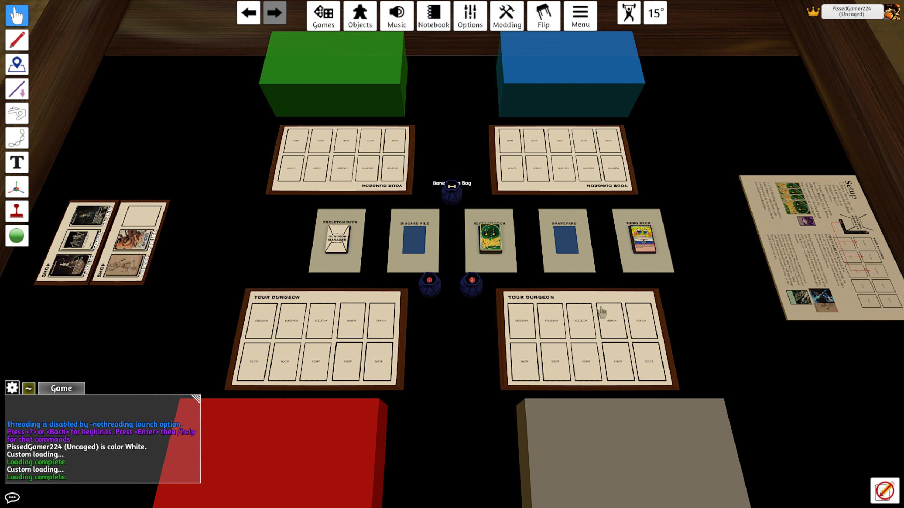
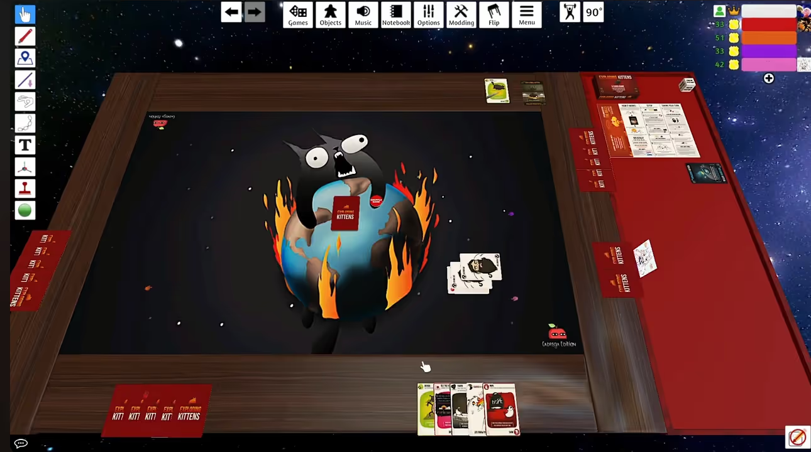
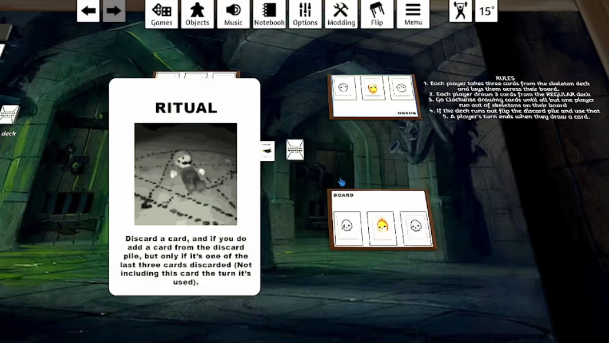
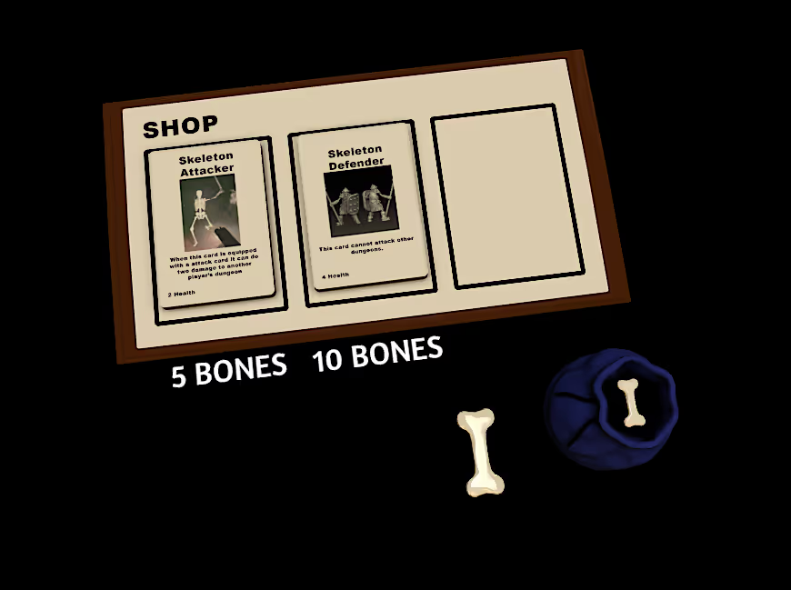
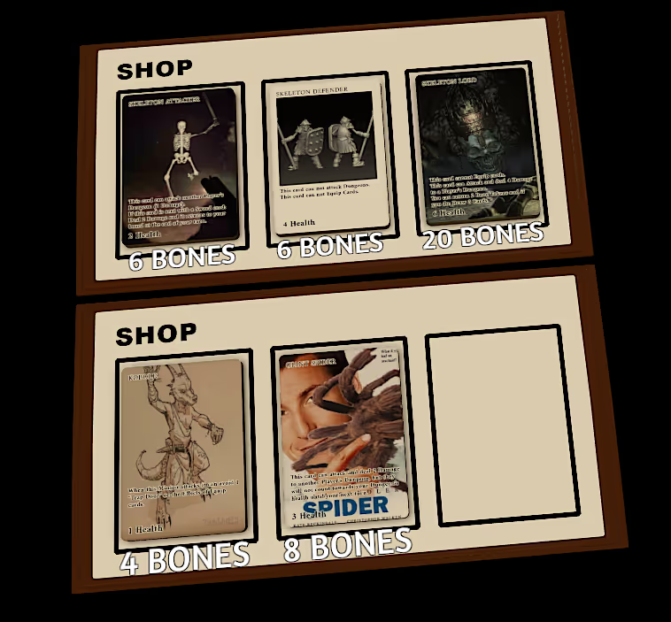

Dungeon Manager
ROLES
Game Developer, Game Designer
Takeaways
- Mechanical changes or additions can significantly impact balance, pacing, and overall player experience.
- Hosted playtesting sessions, learned how different groups engage with the game and how players optimize the system in unexpected ways.
- Iterated on core mechanics through structured playtesting, using player feedback to refine balance and gameplay flow.
Project Overview
Dungeon Manager was an academic project completed within four weeks. I worked alongside Rania, Angela, Edwin and Michael. I designed how the game would work along with rules and various cards with different effects. I also organized various playtesting groups to analyze what parts of the game had flaws that needed to be addressed for a balanced system.
You can play the game here: Dungeon Manager (You will need to own Tabletop Simular on Steam to play!)
Context
Genre: Strategy
Team Size: 4
Platform: PC (Windows, Mac)
Development Time: January - February 2023 (Four Weeks)
Tools Used: Tabletop Simulator (Engine), Adobe Photoshop (Card Art, Layout)

Objective
The purpose of this project was to create a board game that tackled and met the principle of People Fun, which is part of the 4 Keys 2 Fun by Nicole Lazzaro.
Development
Before we began ideating on the game, we went through various board games we enjoyed to use them as a possible source of inspiration. Out of all the games we went through, the game Exploding Kittens was the one we enjoyed the most. This was due to the exciting risk factor the game carried through the game's instant death cards, this exciting yet fear-inducing game mechanic served as the key factor to Hard Fun we took away from our play session.
We worked together on deciding the premise of the game and the mechanics of the game to try to capture the feeling of excitement and fear. I eventually suggested it being a twist on the theme of dungeon crawling board games, where rather than players typically taking the roles of the heroes; they take the roles of the dungeon master.
I brainstormed and wrote down possible mechanics and rules of the game in a document with Michael's assistance. After feedback, I created the first build of the game in Tabletop Simulator.


Playtesting & Iterating
All of us agreed to set up a playtesting group to see what works and doesn't work in the initial build of the game, due to the time constraint the group I assembled was made up of close friends of mine. While I knew they wouldn't try to sugarcoat any criticisms it is nonetheless a point to be mindful of.
Initial feedback was relatively positive, with the balance between each card feeling good. However, they would have liked more cards that interacted with other players. Another critique was that the cards we wanted to have a large impact did not elicit the emotion we were expecting (mainly due to the timing of their reveal). I made changes based on this feedback and had them try it again, with the main critique they had that they wanted the game to have an additional layer of complexity for replayability.
As an potential answer I decided to add a shop mechanic to the game, and then opted to try it out first with a different group for playtesting. The shop had monsters you could upgrade your minions into. An option I gave players would be the option to gain currency instead of normally drawing a card. What this playtest would reveal is a huge issue with the addition of the shop mechanic as it caused the game to slow tremendously compared to before.
The game's design favored defensive play, rewarding players who preferred a cautious approach. This imbalance was evident in the limited impact of fear-inducing cards on well-prepared players. Conversely, players unprepared for such cards were at a disadvantage, leading to early knockouts despite the game's potential for extended play.
To try to make this less of an issue, I went through the various cards in the game and tried to buff offensive options while nerfing the effectiveness of defensive options. I also experimented by adding cheap monster minions a player can purchase for early survivability.


Conclusion
Overall I am happy with the product that was submitted. I found the process of hosting playtest sessions extremely enjoyable, as well as educational as it showed me how much a game can change even with the slightest addition. Though it is clear to me that the game still needs tweaking before it can be considered polished.